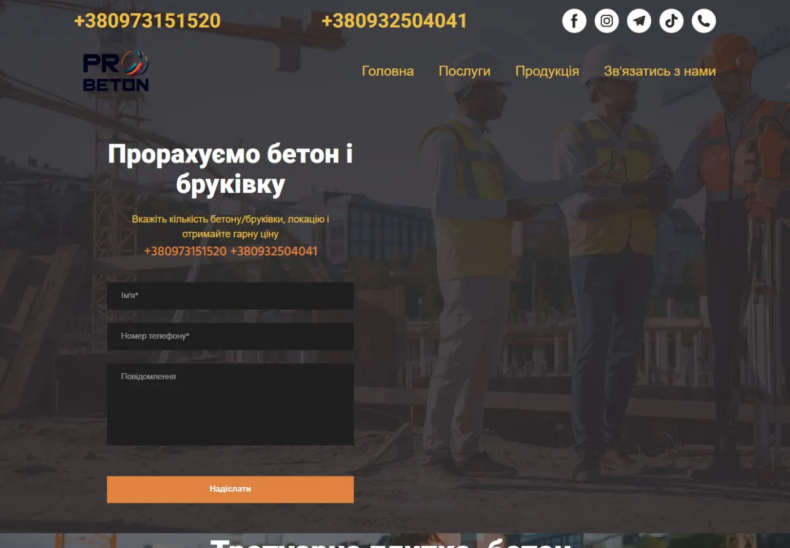
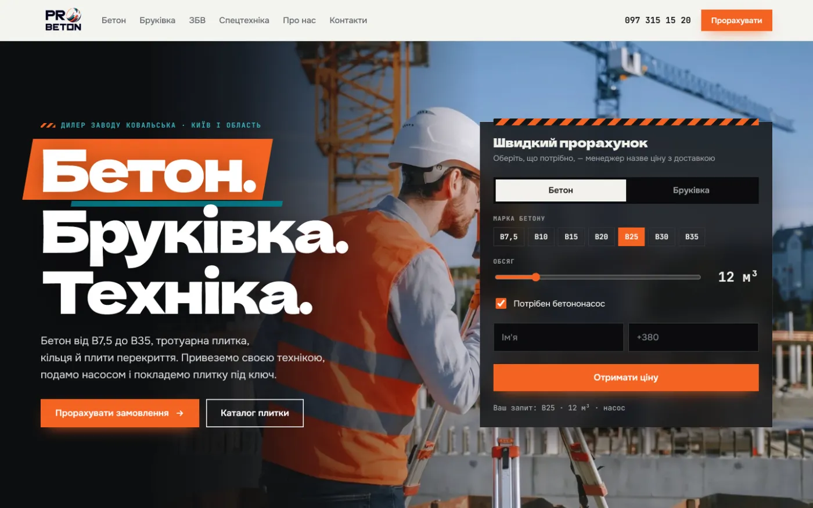
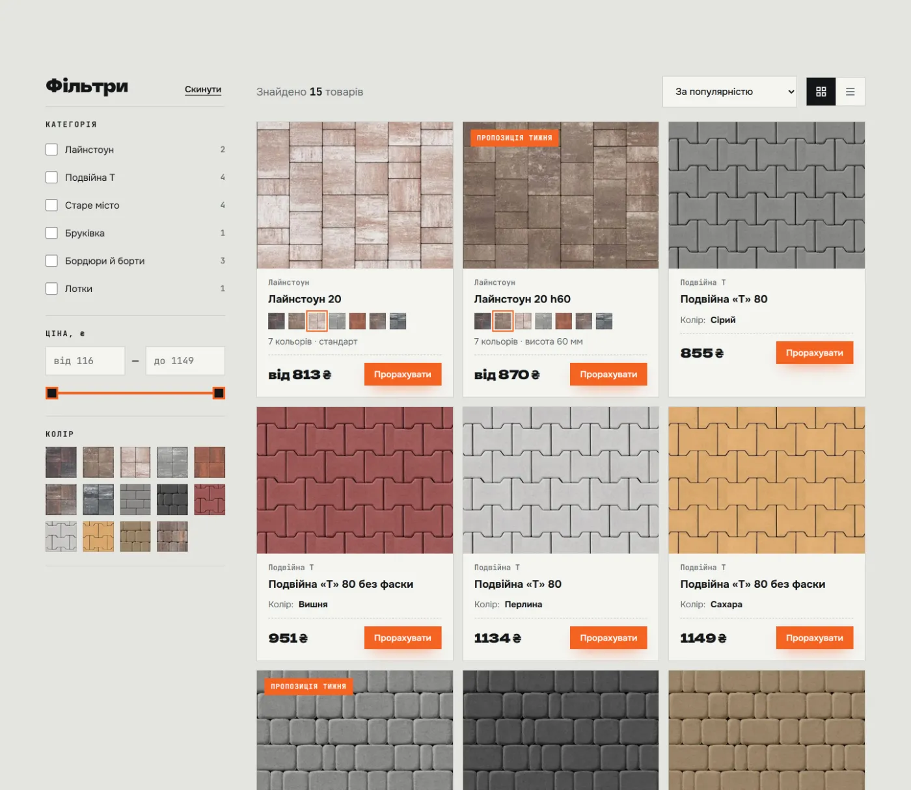
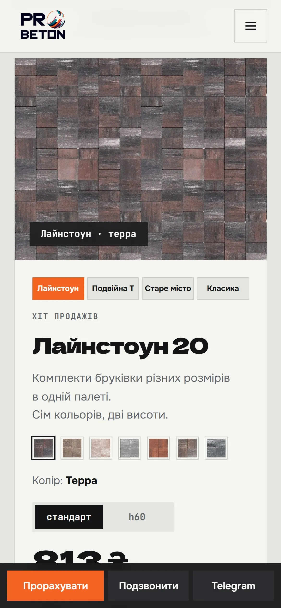

Хто забирає ваших клієнтів
Видача Google за вашими запитами, 12 сайтів конкурентів, ціни на бетон, плитку Ковальська, ЗБВ і техніку. І що з цього може взяти ПроБетон.
Коротко
Чотири головні висновки
Усе, що далі в презентації, розгортає ці чотири пункти
Google вас майже не бачить
За «бетон Київ», «плитка Ковальська Київ», «плити перекриття», «оренда бетононасоса» сайту немає навіть у перших 40 результатах. За назвою «ProBeton» першою виходить фарба для підлог.
Ваш завод — ваш конкурент
Магазин Ковальської стоїть другим за «бетон Київ» і займає п'ять перших місць за «плиткою Ковальська». Дилерові треба продавати те, чого завод не дає.
Ваша плитка дешевша за завод
Старе місто 40 сірий: 612 ₴ у вас проти 739 ₴ у магазині заводу. Подвійна «Т» 80: 855 проти 1 095 ₴. Зараз цього ніде не сказано.
Ринок застарів — це шанс
Сучасно себе подає лише один конкурент. Решта — шаблони, ціни 2021–2022 років, частина сайтів російською. Сильний сайт тут виділяється одразу.
Карта ринку
Три типи конкурентів
Розібрали сайти, що стоять у топ-10 Google за вашими запитами
Виробники
Свої заводи й лабораторії, великі обсяги, тиснуть цифрами довіри.
Магазини-перепродавці
Великі каталоги «від фундаменту до даху», часто продають ту саму Ковальську.
Оренда техніки
Тільки насоси й крани. Конкурують за окремі замовлення техніки.
Google · Україна · 9 листопада 2026
Клієнт шукає вас — і знаходить їх
Перші 8 результатів за запитами, з якими до вас приходять покупці
«бетон Київ»
- grandbeton.com.ua
- shop.kovalska.com
- betonkiev.com
- kievstroy.org
- prombudcentr.ua
- pl2t.com
- s-beton.com.ua
- vkservice.com.ua
probeton.com.ua — немає в топ-40
«тротуарна плитка Ковальська Київ»
- shop.kovalska.com
- shop.kovalska.com
- zavod-brukivky.kyiv.ua
- shop.kovalska.com
- shop.kovalska.com
- zavodfem.com.ua
- okplytka.com.ua
- kanyon.com.ua
probeton.com.ua — немає в топ-40
«плити перекриття купити Київ»
- kievstroy.org
- uabeton.com.ua
- shop.kovalska.com
- olx.ua
- beton-company.com.ua
- t-b-k.com.ua
- bkstromat.com.ua
- rtsplus.com.ua
probeton.com.ua — немає в топ-40
«оренда бетононасоса Київ»
- vkservice.com.ua
- olx.ua
- grandbeton.com.ua
- arenda-betononasos.com.ua
- kievstroy.org
- dptrans.com.ua
- pl2t.com
- royalbud.com.ua
probeton.com.ua — немає в топ-40
Нинішній сайт · probeton.com.ua
Чому Google вас не показує
Технічно сайт швидкий — 98 балів PageSpeed. Проблема в іншому: йому нема чим відповісти на запит покупця

probeton.com.ua, перший екран, 9.11.2026
Головна, «Послуги» й «Продукція». Окремої сторінки під бетон, ЗБВ чи техніку немає — Google нема що показати за «бетон Київ» чи «оренда бетононасоса».
Підзаголовки сторінки — це два телефони, а на «Послугах» і «Продукції» головного заголовка немає зовсім. Пошуковик не розуміє, про що сторінка.
«ПроБетон тротуарна плитка, бетон, ціни зі знижками» — без «Київ», «доставка», «ЗБВ», «спецтехніка». Саме за цими словами шукають.
Гість бачить три поля «Прорахуємо бетон і бруківку». Не видно, що ви дилер Ковальської, маєте свою техніку й возите по області.
«Лайнстоун 20 — ₴813UAH»: за м², штуку чи піддон? Людина не розуміє суму й іде порівнювати.
Написано «100 тис. м² плитки», але немає жодного фото об'єкта, техніки чи відгуку.
Що варто перейняти
Що в конкурентів зроблено добре
Кожен робить добре щось одне. Новий сайт ПроБетону збирає найкраще разом
Гранд Бетон
Цифри довіри на першому екрані18 років, 6 майданчиків, 800 тис. м³ на рік, 12 тис. клієнтів, власна лабораторія. Таблиця доставки на 1–80 км, прозорий прайс насоса: мінімум і кожна наступна година.
Бетон Київщини
Повний прайс відкритоЦіна кожної марки з розбивкою за рухливістю Р1–Р5 і PDF-прайс із датою. Покупець порівнює, не дзвонячи.
РТС Плюс
Живий менеджер на кожен напрямІм'я й телефон відповідального біля кожної послуги, Viber, WhatsApp і Telegram. Вимоги до майданчика для насоса — щоб не було сюрпризів на об'єкті.
Стромат
Месенджери й розстрочкаКнопки Viber і Telegram, позначка «в наявності», розстрочка на 4 місяці й кредит на рік.
Kievstroy
Характеристики для прорабаУ картці плити — вага, клас бетону й скільки штук влазить у фуру на 20 т. Купити в один клік.
Слабкі місця всіх
Шаблони, старі ціни, жодної повної сумиПоловина сайтів має прайси 2021–2022 років або «ціна за запитом». Ніхто не рахує суму з доставкою. Фото своєї техніки й відгуки — майже ні в кого.
Ціни ринку · бетон і насос
Скільки беруть конкуренти
Ціни з сайтів 9.11.2026, гривні. Доставку майже всі рахують окремо за кілометри, мінімум 7 м³
Бетон В25 (М350) за м³, без доставки
| Компанія | Тип | Р3 | Р4 |
|---|---|---|---|
| ЕкоБетон Плюс | магазин | 4 539 | — |
| PL2T | магазин | 4 970 | 5 290 |
| Бетон Київщини | завод | 5 000 | 5 310 |
| Kievstroy | магазин | 5 455 | 5 802 |
| Гранд Бетон | завод | — | 6 035 |
В25 Р4 — від 5 290 до 6 035 ₴. Застарілий прайс ВК Сервіс (3 189 ₴, сайт не оновлювався з 2021) і «ціну за запитом» S-Beton не враховано.
Автобетононасос
| Компанія | Стріла | Мінімум | Далі / год | Зміна |
|---|---|---|---|---|
| РТС Плюс | 16–24 м | 7 000 / 2 год | 2 300 | 20 800 |
| Гранд Бетон | 20 м | 11 000 / 2 год | 3 500 | — |
| Трест Буд | 16–24 м | від 11 000 | — | — |
| Kievstroy | — | від 11 990 | — | — |
| ВК Сервіс | 16 м | 12 000 | — | — |
Найзрозуміліше показує РТС Плюс: мінімум, кожна наступна година й зміна. Решта пишуть «від» або «уточнити ціну».
Ціни ринку · бруківка Ковальська
Ваша плитка дешевша, ніж у заводу
Та сама плитка в різних продавців, ₴ за м² (бордюр — за штуку). Ціни з карток у Google, 9.11.2026
| Продавець | Старе місто 40 сірий | Лайнстоун 20 | Подвійна «Т» 80 сірий | Бордюр парковий |
|---|---|---|---|---|
| ПроБетон | 612 | від 813 | 855 | 348 (вишня) |
| Магазин заводу Ковальська | 739 | 990 | 1 095 | 318 сірий · 423 колір |
| omo.ua | 702 | 990 | 1 095–1 443 | — |
| Alex Group | — | 940 | — | — |
| АКБР | 628 | — | 944 без фаски | — |
| Megabruk | 630 | — | — | — |
| Fempro | — | 793 (h60) | — | — |
| Завод Бруківки | 534–675 | 772 | 854 | — |
| P-bud | — | 743 | — | — |
Дешевше за вас — лише кілька дилерів, на 5–15%. Вони продають і інші бренди, а своєї техніки й укладання не показують.
Треба підтвердити: ціни у вашому прайсі — за м²? На нинішньому сайті одиниць немає.
Ціни ринку · ЗБВ і укладання
Один товар — три різні ціни
Покупець бачить розкид і не довіряє нікому. Свіжий прайс із датою вже вирізняє сайт
ЗБВ, ₴ за штуку
| Компанія | ПК 60-12-8 | КС 10-9 | Розвантаження краном |
|---|---|---|---|
| Стромат | 7 227 | 700 | не пропонують |
| Kievstroy | 7 392 | 2 432 | маніпулятор +700–1 000 ₴ |
| ЕкоБетон Плюс | 8 502 | 1 688 | не вказано |
Плита одного заводу — від 7,2 до 8,5 тис. ₴, кільце — від 700 до 2 432 ₴. Продати плиту разом із розвантаженням своїм краном пропонує лише один магазин.
Укладання бруківки, ₴ за м²
| Компанія | Ціна | Що входить |
|---|---|---|
| Завод Бруківки | від 200 | «під ключ» |
| Apex-bud | 250 | плитка 60–80 мм |
| Coliseum | 300–400 | пішохідна зона / заїзд |
| PL2T | 400 | на готову основу, основа ще 250 |
Пакета «плитка + доставка + укладання = сума за м²» немає ні в кого. У ПроБетону все це своє — залишилось показати ціну.
Як забрати клієнтів
Шість прогалин ринку — і як їх закриває новий сайт
| Чого бракує ринку | Як у конкурентів | Новий сайт ПроБетону | |
|---|---|---|---|
| Повна сума за адресою | Скрізь «від 45 ₴/км» і «уточнюйте в менеджера». | Калькулятор бетону й площі плитки вже на сайті. Після брифу покаже суму з доставкою й насосом. | ◐ |
| Усе в одному замовленні | Завод продає товар, магазини — каталог, орендарі — техніку. | Бетон, бруківка, ЗБВ і техніка — окремі сторінки й одна заявка. Головна відмінність на першому екрані. | ✓ |
| Ціни видно одразу | Половина — прайси 2021–2022 або «за запитом». | Ціни з прайсу на картках, в акціях і калькуляторі, з одиницями. Каталог з фільтрами. | ✓ |
| Побачити плитку до покупки | Ніхто не показує, як колір ляже у дворі. | Візуалізатор двору: обираєш колір і модель — бачиш свій двір. | ✓ |
| Знайтися в Google і нейромережах | Шаблонні тексти, заголовки «для робота». | Сім сторінок під запити, розмітка для Google, файл для ChatGPT і Gemini. SEO 100 з 100. | ✓ |
| Докази й швидкий зв'язок | Фото техніки й відгуки — майже ні в кого. | Блоки під об'єкти, техніку й команду, дзвінок у зручний час. Фото й месенджери — після брифу. | ◐ |
✓ вже зроблено ◐ готово, чекає ваших цін, фото й контактів
Новий сайт · probeton-site-beta.vercel.app
Що побачить ваш клієнт
Демоверсія вже працює — з вашими цінами, плиткою Ковальська й фото з нинішнього сайту



Порівняння
Новий сайт проти сильних конкурентів
За тим, що видно на сайтах 9.11.2026
| Гранд Бетон | Бетон Київщини | Kievstroy | PL2T | Нинішній probeton | Новий сайт | |
|---|---|---|---|---|---|---|
| Ціни відкрито на сайті | ✓ | ✓ | ✓ | ✓ | ◐ | ✓ |
| Окремі сторінки під кожну послугу | ✓ | ✓ | ✓ | ✓ | — | ✓ |
| Калькулятор на сайті | ✓ | — | ◐ | — | — | ✓ |
| Бетон + плитка + ЗБВ + своя техніка | ◐ | — | ◐ | ◐ | ✓ | ✓ |
| Візуалізатор кольору плитки | — | — | — | — | — | ✓ |
| Укладання плитки під ключ | — | — | — | ✓ | ✓ | ✓ |
| Українська мова, сучасний дизайн | ✓ | ◐ | ◐ | ◐ | ◐ | ✓ |
✓ є ◐ частково — не знайшли на сайті
Що далі
План: від сайту до заявок
Сайт уже зібраний — після брифу наповнюємо його вашими даними й запускаємо на probeton.com.ua
Сайт + фірмовий стиль
Сім сторінок під пошук, каталог з фільтрами, калькулятор, візуалізатор двору, мобільна версія, перенесення домену.
Підтримка
Оновлення цін і акцій, нові об'єкти, аналітика заявок щомісяця.
Далі — реклама
Google за вузькими запитами, де зараз немає жодного оголошення. Таргет в Instagram і Facebook.
Чотири кроки після запуску
Як збирали дані
Методика й обмеження
Перевірена 9.11.2026 з налаштуваннями «Україна, українська мова», перші 40 результатів. У кожного користувача видача трохи інша — залежно від місця й історії пошуку.
12 сайтів відкрито й прочитано вручну того ж дня: grandbeton.com.ua, betonkiev.com, kievstroy.org, vkservice.com.ua, s-beton.com.ua, pl2t.com, uabeton.com.ua, beton-company.com.ua, bkstromat.com.ua, rtsplus.com.ua, arenda-betononasos.com.ua, dptrans.com.ua.
З карток товарів у видачі Google. Магазин Ковальської й t-b-k.com.ua не відкриваються для автоматичної перевірки. Підозріло низькі ціни (357–507 ₴), схожі на застарілі, не враховано.
probeton.com.ua перевірено 9.11.2026: сторінки, заголовки, назва для Google. PageSpeed Insights: 98 на телефоні, SEO 100 — швидкість не проблема.
Прайси ВК Сервіс (2021) і Бетон-компані (2022) у порівняння не включено.
Як на кожному сайті. Ціни ПроБетону — з нинішнього сайту, одиниці виміру треба підтвердити.